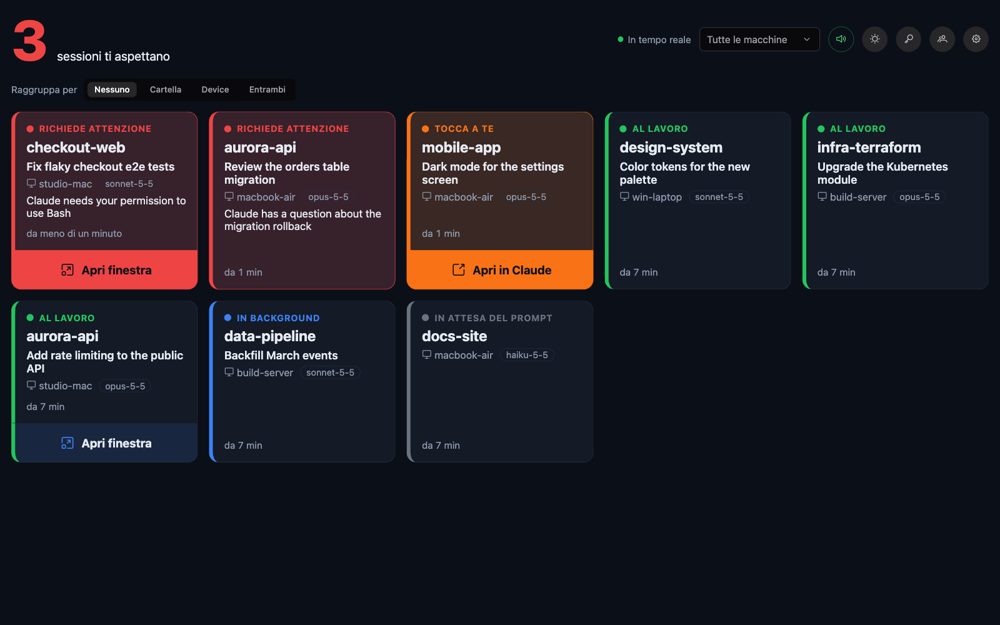

Tutte le sessioni, tutte le macchine
Una card per sessione con stato, cartella, nome della sessione, macchina, modello e tempo nello stato, aggiornata in tempo reale.
Open source · Da ospitare in proprio · MIT
Claude Monitor riunisce in un'unica bacheca in tempo reale le sessioni di tutte le tue macchine e ti avvisa, con un suono e una notifica push, nel momento in cui Claude chiede un permesso o aspetta la tua risposta.

Funzioni
Pensato per chi usa più sessioni di Claude Code insieme, su più di un computer.
Una card per sessione con stato, cartella, nome della sessione, macchina, modello e tempo nello stato, aggiornata in tempo reale.
Suoni diversi per «Richiede attenzione» e «Tocca a te», ripetuti finché non guardi, e Web Push anche con l'app chiusa.
Le sessioni con task in background o risvegli pianificati restano silenziose finché non tocca davvero a te.
Su macOS un agente facoltativo porta in primo piano il terminale giusto o l'app Claude, sul Mac che stai usando.
Prompt, risposte e output dei tool vengono tolti prima di lasciare la tua macchina. Il server è tuo, i dati anche.
Chiavi hook e dispositivi personali per ogni utente. Interfaccia in italiano e inglese, facile da tradurre.
Stati delle sessioni
Claude Monitor trasforma gli eventi degli hook di Claude Code in uno stato chiaro e ordina le card per urgenza.
Come funziona
Crea una chiave nella dashboard ed esegui lo script generato su ogni macchina: registra un piccolo hook nelle impostazioni di Claude Code.
L'hook invia gli eventi della sessione al tuo server, che ne ricava lo stato e li salva in PostgreSQL.
Ogni dashboard aperta si aggiorna subito; quando una sessione ti aspetta, i tuoi dispositivi suonano e ricevono una notifica.
Schermate
Si installa come un'app, ha il tema chiaro e quello scuro, si legge anche da lontano.


Riservatezza e sicurezza
A Claude Monitor basta sapere che qualcosa è successo, non su cosa stai lavorando.
Inizia
Servono Docker e un indirizzo HTTPS per la PWA e le notifiche push. L'avvio rapido spiega passo per passo chiavi, HTTPS e installazione sull'iPad.
# Scarica e configura
git clone https://github.com/sartoriadelcodice/claude-monitor.git
cd claude-monitor && cp .env.example .env
# Chiavi per le notifiche push
scripts/generate-vapid-keys.sh
# Avvia lo stack su http://localhost:8088
docker compose up -d --buildDomande frequenti
No. Vengono inviati solo i metadati degli eventi: nome dell'evento, id della sessione, nome della cartella, macchina, modello, tipo e testo della notifica.
Sì. L'hook esiste per Bash (macOS, Linux) e PowerShell (Windows). Solo l'agente facoltativo del focus è per macOS.
No. Claude Monitor non chiama servizi di Anthropic: riceve gli eventi degli hook di Claude Code che installi.
Sì, è open source con licenza MIT. PrimeNG, usato dall'interfaccia, richiede una chiave PrimeUI gratuita (Community License).
Metti una stella al progetto, segnala un problema, aggiungi una traduzione. I contributi sono benvenuti.
Contribuisci su GitHub